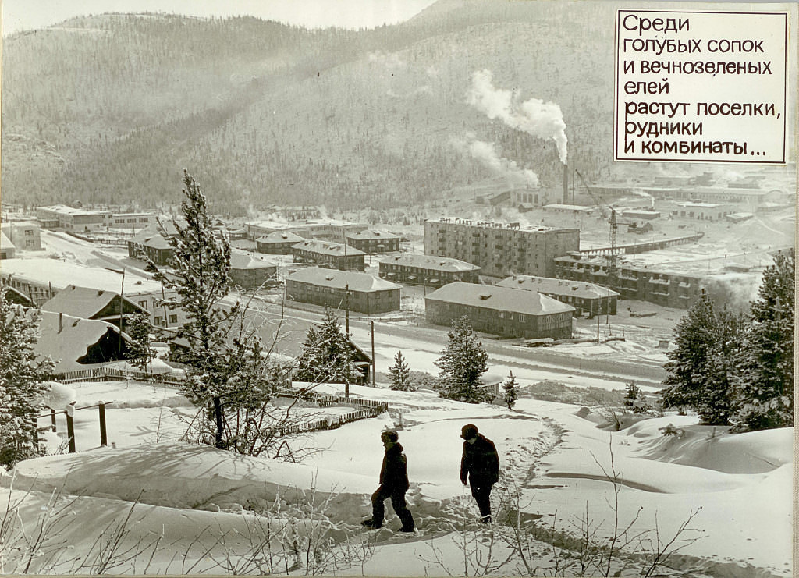

Поселок «Согдиондон»
Согдиондон — покинутый посёлок городского типа Мамско-Чуйского района Иркутской
области. Образовывал Согдиондонское городское поселение. Упразднён в марте 2019 г.
Находится на правом берегу реки Согдиондон (правый приток Большой
Чуи), в 125 км к юго-западу от рабочего посёлка Мама на автодороге 25Н-328 Мама — Горно-Чуйский.
Основан в 1929 году. Основное занятие населения — добыча и переработка слюды.
Статус посёлка городского типа с 1976 года.
В связи с неперспективностью жизни в отдаленных поселках Мамско-Чуйского района в 2015 году в Иркутской области были приняты законы, предусматривающие переселение жителей посёлков Горно-Чуйский и Согдиондон (ранее были переселены жители пос. Слюдянка). В 2015 году началось переселение посёлка Горно-Чуйский, в 2016 году — посёлка Согдиондон.
C 2020 года поселок не населён.
Архивные материалы

«Во времена расцвета, живой посёлок укутанный в белое одеяло снега
»
Дополнительная информация:
Координаты: 57°41′29″ с. ш. 112°09′46″ в. д.
Поселок «Согдиондон» на карте России
*Если у вас имеется какая-либо информация и/или фото-/видеоматериалы, касающиеся деревни, описанной на сайте, то свяжитесь с нами через раздел «Контактая информация»